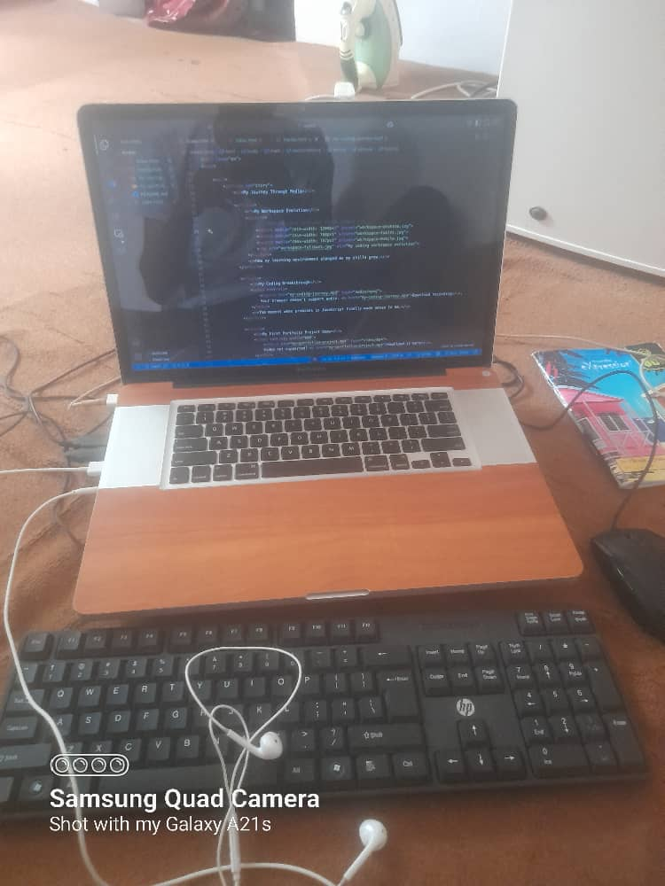

My Workspace Evolution

How my learning environment changed as my skills grew.

How my learning environment changed as my skills grew.
The moment when promises in JavaScript finally made sense to me.
A modern day static site portfolio template that can be used for an online resume Any new ideas and constructive criticism will be highly appreciated
This tutorial on HTML for Beginners completely transformed my approach to Web Development.
Check out the programs at AltSchool that made this journey possible.
Or return to my profile homepage.